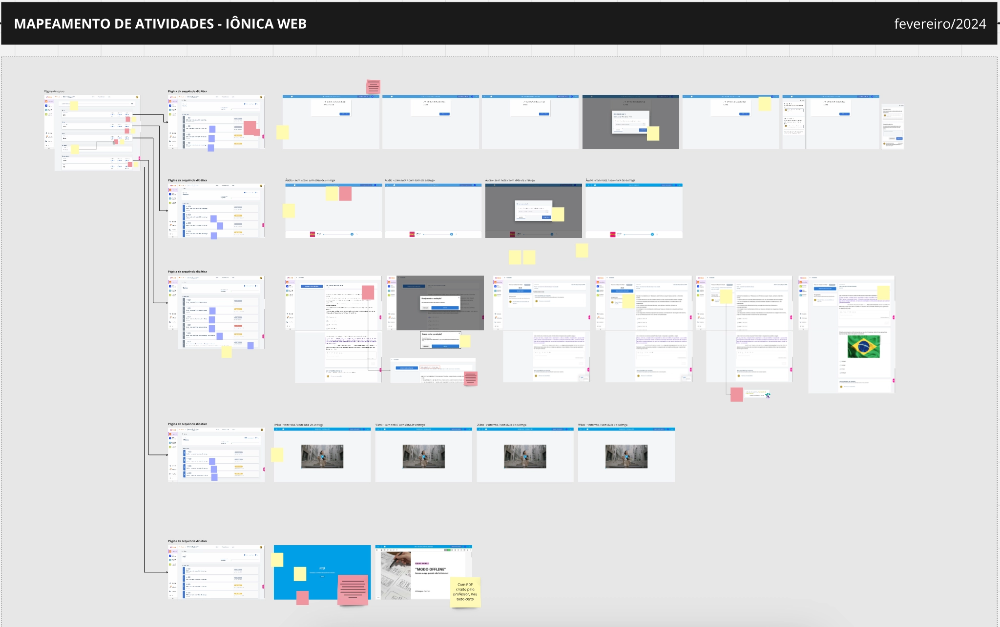
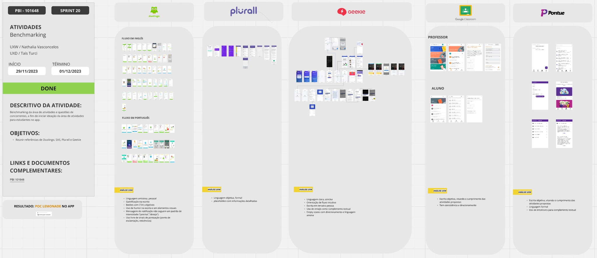

iônica · FTD Educação · 2024
Levando atividades escolares para o aplicativoBringing school activities into the mobile app
Como adaptei uma jornada complexa do ambiente web para que estudantes pudessem realizar exercícios, provas e trabalhos pelo celular.
How I adapted a complex web journey so students could complete quizzes, exams, and assignments on mobile.

01 · ContextoContext
Uma plataforma usada por milhares de escolasA platform used by thousands of schools
A iônica é um Learning Management System (LMS) criado pela FTD Educação, uma das 50 editoras mais relevantes do mundo. A plataforma foi pensada para estudantes acessarem livros digitais e realizarem atividades, para professores criarem tarefas e conduzirem aulas online e para administradores escolares gerenciarem melhor suas instituições.
iônica is a Learning Management System (LMS) created by FTD Educação, one of the 50 most relevant publishing companies in the world. It was designed for students to access digital books and complete activities, teachers to create assignments and teach online classes, and school administrators to better manage their institutions.
Hoje, o produto é usado por mais de 4.000 escolas, 155.000 estudantes e 17.000 professores. Ele nasceu como uma aplicação web, e eu venho participando de perto do desenho da experiência mobile, cujo MVP foi lançado no fim de 2023 com funcionalidades voltadas aos estudantes.
Today, the product is used by over 4,000 schools, 155,000 students, and 17,000 teachers. It was originally built as a web application, and I have been deeply involved in designing its mobile experience, whose student-focused MVP launched in late 2023.
Este case mostra meu trabalho em uma das funcionalidades mais pedidas: permitir que estudantes realizem exercícios, trabalhos, provas e projetos diretamente no aplicativo.
This case study highlights my work on one of the most requested features: enabling students to complete quizzes, assignments, exams, and projects directly within the app.
02 · Discovery
Entender a jornada antes de adaptá-laUnderstanding the journey before adapting it
Comecei mergulhando na jornada existente de atividades dos estudantes na versão web da iônica. Mapeei todos os tipos de atividade e de questão, as informações apresentadas em cada status — pendente, entregue, corrigida — e as diferentes maneiras pelas quais estudantes podiam acessar e responder cada uma delas.
I started by deep diving into iônica's existing student assignment journey on the web. I mapped every type of assignment and question, the information shown in each status—pending, delivered, corrected—and the different ways students could access and answer them.
Também conversei com designers de outras squads para entender mudanças planejadas para a jornada e reunir aprendizados de pesquisas recentes. Em paralelo, eu e a content designer da squad fizemos um benchmarking visual e de conteúdo com aplicativos de outras empresas brasileiras de educação, como Plurall, e plataformas reconhecidas, como Duolingo e Google Classroom.
I also spoke with designers from other squads to understand planned changes to the journey and gather insights from recent research. In parallel, the squad's content designer and I benchmarked the visual and content approaches of Brazilian education apps such as Plurall, as well as platforms including Duolingo and Google Classroom.

03 · Fluxo e wireframesFlow and wireframes
Adaptar sem carregar a complexidade da webAdapting without carrying over the web's complexity
Com os aprendizados da discovery, desenhei o fluxo do estudante adaptando a experiência web às limitações e possibilidades do mobile. Apresentei a proposta aos stakeholders da squad para receber feedback e entender sua viabilidade técnica.
With the insights gathered during discovery, I designed the student flow by adapting the web experience to the limitations and possibilities of mobile. I presented the proposal to the squad's stakeholders to gather feedback and understand its technical feasibility.
Depois de validar o fluxo, criei wireframes de baixa fidelidade para estudar como a hierarquia das informações funcionaria em celulares e tablets. Mantive o diálogo com as pessoas desenvolvedoras durante todo o refinamento, garantindo que as decisões de interface fossem viáveis.
After validating the flow, I created low-fidelity wireframes to understand how the information hierarchy would work on phones and tablets. Throughout refinement, I kept an open dialogue with the developers to ensure the interface decisions were technically viable.

04 · Planejamento e handoffPlanning and handoff
Quatro entregas distribuídas em três sprintsFour deliveries across three sprints
Em conjunto com a PO, discuti como dividir o desenho de alta fidelidade em fases e estabelecer prazos realistas. Organizamos a entrega em três sprints: primeiro, o resumo de atividades na home; depois, a visão geral da área de atividades; e, por fim, a página de informações e o leitor da atividade.
Together with the PO, I discussed how to divide the high-fidelity design into phases and set realistic deadlines. We organized delivery into three sprints: first, the activities summary on the home page; then, the activities overview; and finally, the activity information page and reader.
O handoff não se limitou às telas principais. Incluiu estados vazios, lazy loading, alertas de erro e sucesso, modais de confirmação e explicações detalhadas dos fluxos e dos estados dos componentes.
The handoff went beyond the main screens. It included empty states, lazy loading, error and success alerts, confirmation modals, and detailed explanations of the flows and component states.
05 · Validação e lançamentoValidation and launch
Aprender com o uso realLearning from real use
O ideal seria testar os wireframes com estudantes antes do desenvolvimento. Como nosso público tinha entre 8 e 17 anos, precisaríamos obter autorização dos responsáveis e contar com a presença deles em todas as sessões — um processo bastante burocrático e demorado naquele contexto.
Ideally, we would have tested the wireframes with students before development. Because our users were between 8 and 17 years old, we would have needed parental permission and their presence in every session—a particularly bureaucratic and time-consuming process in that context.
Decidimos lançar a funcionalidade no fim de 2024 e validar sua usabilidade acompanhando o feedback dos estudantes e os dados reais de uso no Google Analytics. No início de 2025, com a volta às aulas no Brasil, o uso aumentaria bastante; nosso compromisso era ouvir com atenção e ajustar a experiência sempre que necessário.
We decided to launch the feature in late 2024 and validate its usability through student feedback and real usage data in Google Analytics. At the beginning of 2025, as the Brazilian school year started, usage would increase significantly; our commitment was to listen closely and adjust the experience wherever necessary.